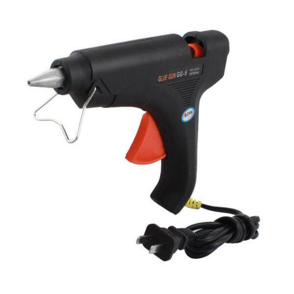

Building electronic projects and robotics projects is always fun. There’s no correct way defined strictly as how things are done. We are allowed to use our creative minds to make them unique. Sometimes, using the correct tools for the small tasks in our projects can make our lives easier and the increase quality of the outcome. Even though we are more used to grab the tools within our reach and build our projects, it’s always good to learn how the things are done correctly with the tools.
Through this article, I would like to share some of the tools I found useful when building my robotics and electronic projects. As some of you might be familiar with all the tools, this article is specially targeted for those who don’t have much idea about the tools as I once were. I will only go through some of the tools I have used. Feel free add your suggestions and comments where I can add them to the post later. Let’s dive into the topic.
Here is the list of tools that was useful to me when building my electronic and robotics projects. It doesn’t mean that all these are needed for every project, but it’s useful to know about the tools anyway!
1. Gluegun
This has made its way to the top of the list is that how this simple tool can help to build your electronic prototypes easily. Reasonable price and the cheaper melting adhesive polymer refills help to stick most of the materials together like wood, acrylic and cardboard. These glue sticks come in different colors to match different applications. Usually the glue is resistant to water, but it cannot withstand high temperature. Even using glue gun is not advisable for professional designs, it always comes handy for prototyping.
2. Mini drill set

Most of us are very familiar with the ordinary hand drill used for drilling holes by the professionals. But for electronic projects we need small drill bits such as 0.8mm, 2mm, 3mm (typically less than 6mm). Therefore, having a mini hand drill will greatly help building our projects. Smaller footprint of mini drill allows less pressure on the drilling point and it’s easier to drill with good accuracy. Some of these have a feature of expanding the shaft using a bendable cable which helps to reach smaller areas. Other than drilling holes many kits come with attachable tools such as cutoff wheels, grinding disks and polishing attachments. Some of the frequent applications I have used in my experience are drilling PCB holes, drilling mounting holes, sharpening tools, cutting off PCBs and cutting acrylic.
3. Screwdriver set

This tool is the most popular one among the list which I think all of you enthusiasts poses. I wanted to include this just for the sake of making the list complete. I would not dive deep into this tool.
4. Digital Multimeter

Here I’m basically talking about the portable digital multimeter as it’s cheaper than the higher-grade digital multimeter which can be seen in electronic labs. Some of the basic application in my experiences are,
- Measuring voltage of power modules and checking logic levels.
- Checking resistances of resistors – many through-hole cheap resistors usually don’t come with the accurate resistance values displayed in the color code. It’s always better to measure before using in the project.
- Checking connectivity (diode mode) – when debugging the projects for connectivity issues this feature is a life saver.
- Measuring current – by measuring the total current consumed by the circuits help to get an idea about the usage time of the device when powered by a battery. I will write a separate article on important things to consider when using li-po batteries in the future.
- Checking working state of transistors – this is a handy feature of some multimeters to check working condition of BJTs.
These are just the main applications of multimeter. If you have some great features to add please mention below.
5. Digital caliper

This is another important tool when taking measurements of components. When we don’t have 3D models of the components, we need to custom design them using the physical dimension measurements. Digital caliper, which is also sometimes incorrectly called as Digital Vernier Caliper can measure internal and external distances with good accuracy rather than using a simple ruler. LCD display is used to display the readings and the locking screw can be used to lock the caliper while taking readings.
6. Plastic cutter

This tool is commonly used in hardware stores to cut large acrylic sheets. The thin blade is so sharp that couple of hard swipes on the plastic surface is enough to break apart the material with torsion.
7. Tweezer

Sometimes our 10 fingers are not enough to handle sensitive components and reach small spaces. Tweezers come in handy in this case. I remember removing a wire from the main board of a robot we made. After trying to replace the wire without dissembling the robot with my hands, only after using the tweezers helped me to achieve the task. Tweezers are commonly used in the areas of electronics, craft, jewellery and laboratory work. There different types of tweezers available for different types of uses. Tweezers are usually anti-static, protected from ESD and stainless steel. Main application of tweezers in electronics is the use in soldering SMD components in PCBs. I’m planning to write a separate article of tools for soldering in the future.
8. Wire cutter (Diagonal plier)

This tool is indented to easily cut wires and cables. Having a separate tool with sharpened jaws comes in handy sometimes. This is very popular among electricians.
9. Wire stripper

This tool helps to remove the insulation of wires for soldering and connecting purposes, which some of are used to do by your teeth. I recommend to use this tool for this application as it’s secure and we can decrease damaging the conducting area of a wire.
10. Wire crimping tool

Ever wondered how those wires are attached to JST female connectors and jumper wires we often use? Ever wandered to make custom cables for your project. Wire crimping tool comes in handy to make your wire harnessing look professional. This is also a cheap tool to be purchased at the hardware store or from online. This single tool supports connecting of many different kinds of connectors to wires.
11. Angled plier

Plier is commonly used to grab components, bending and cutting. Sometimes angled pliers come in handy as they are stronger than tweezers. Therefore, we can grab into components when we want to remove them or do adjustments.
12. Soldering toolkit

Soldering can be portrayed as another art considering how simple it begins to how complex it can go. Therefore, I’m planning to cover this section in a later post in detail.
13. Power supply unit

When we need to test our circuits without using battery, we need a reliable power supply unit for testing. I recommend using a good laboratory dc power supply unit even though they are expensive. These power supplies usually come in multiple outputs, output voltage and current control and protection systems.
I think you might have learned something new from the article. It’s fun to work with tools to build our electronics projects. Please mention suggestions to improve my articles in the future.
Good luck in building your next electronic project!